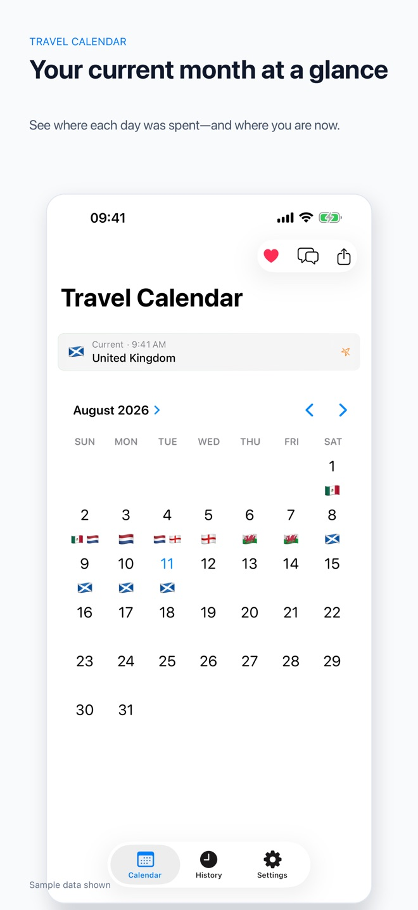
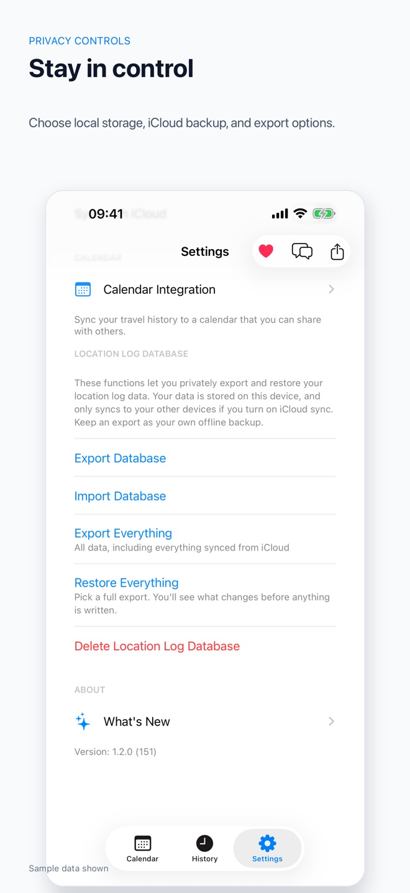

100% Private
Your location data never leaves your device unless you choose to export it. No servers, no databases, no third-party access. We can't see your data because we don't collect it.
A private travel journal for iPhone
Automatic travel history that stays on your device.
Atlas Logged records the places that matter, then turns them into a calm, useful journal of your travels — without selling, profiling, or centralizing your location data.
Free · iOS 17+ · No ads, ever
Browse the month you travelled, review a clear trail of days and places, and choose exactly how much precision the app retains.


The record stays with you
Your location data never leaves your device unless you choose to export it. No servers, no databases, no third-party access. We can't see your data because we don't collect it.
Automatically logs countries and cities you visit in the background. Choose your precision level from country-wide to exact coordinates. Set it and forget it.
Optimized using Apple's native location-change events. Less than 1% battery per day, even on heavy travel days. Smart updates only when you actually move.
A visual calendar for your complete travel history. See where you've been with detailed statistics, trip duration, and distance travelled.
Control exactly what gets saved. Choose Country, City, Precise, or Maximum tracking precision. You can delete coordinates and keep only location names. Learn more.
Sync across your devices with end-to-end encryption through Apple's iCloud. Your data stays private and always under your control. Completely optional.
A record for every kind of traveller
Atlas Logged adapts to your privacy and travel habits without asking you to trade either away.
Keep a complete log of every country and city you visit. Visualize your travel journey and see your global footprint grow over time.
Want the convenience of location tracking without corporate surveillance? Your data stays on your device—always.
Document your journeys automatically with detailed trip statistics: a useful reference for the stories you decide to share.
Before you set off
Atlas Logged uses automatic location-change tracking to build your travel history while using minimal battery. Manual entry remains available when you prefer it.
No. Your data stays on your devices and, if enabled, in your personal iCloud account. Optional privacy settings can retain only country or city names, and only you can initiate an export.
The app uses Apple's native location-change events, so it wakes when you actually move rather than running a constant GPS feed. Even on heavy travel days, use is typically less than 1%.